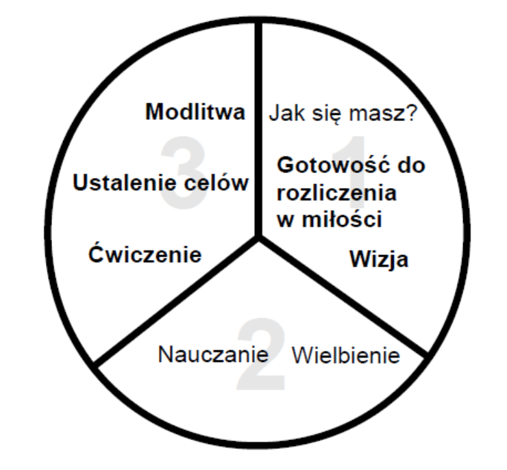

<h1>Proces trzy-trzecie</h1>
<div style="margin-right:25px;float:left">
</div>
<p><i>Więcej szczegółów dotyczących korzystania z tego schematu znajdziesz w <a href="/Training_Meeting_Outline/pl">Plan spotkania treningowego</a></i>
</p>
<ol><li>Jak się masz?</li>
<li><b>Gotowość do rozliczenia w miłości</b></li>
<li><b>Wizja</b></li>
<li>Wielbienie</li>
<li>Nauczanie</li>
<li><b>Ćwiczenie</b></li>
<li><b>Ustalenie celów</b></li>
<li><b>Modlitwa</b></li></ol>
<p><br/>
</p><p><br/>
</p>